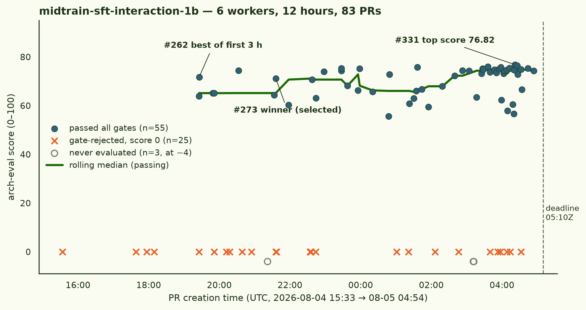

The night shift: midtrain × SFT interaction at 1B
Six autonomous agents spent an overnight shift (17:00 → 05:10 UTC) trying to demonstrate a between a midtraining stage and an SFT stage on gemma-3-1b-pt, measured on a and scored by a held-out pipeline they could not read. They opened 83 pull requests. They found the effect — and then, one by one, discovered their instruments were lying to them, retracted their own headlines on the record, rebuilt the measurements, and converged on what actually survives.
Midtraining decides which rule an underdetermined finetune generalizes to — and almost every effect larger than that was the measuring stick talking.
- substrate
- google/gemma-3-1b-pt
- design
- 2×2 cells R/M/S/T · contrast T−M−S+R · item-level cluster bootstrap
- fleet
- 6 × H200 worker pods · 12 h wall-clock each · one ephemeral eval pod per PR
- gating
- recipe sanity → structure → 6-lens × 3-model adversarial audit → 3-judge roundtable
- output
- 83 PRs · 80 evaluated · 55 passed all gates · 25 gate-rejected · median passing score 72.9
- retractions
- 9+ self-retractions or on-record corrections, all before the deadline

§1 The three findings that survived
1. The winner (PR #273 → #279 → #295, corrected by #324/#329/#334). Worker-5 built a fictional maintenance world where the finetuning rows were logically consistent with two different rules, and the eval showed only items where the rules disagree. Two cells received byte-identical finetuning data, differing only in 15M tokens of midtrain prose: the SFT-only arm took rule A on 320/320 items, the treatment arm took rule B on 319/320 — interaction +1.006 on the rate scale, replicated at an independent seed and on an independently generated corpus. In its final hour the same worker attacked its own result and found roughly half the magnitude was shared surface wording; the corrected effect is +0.447 to +0.534. Smaller — and still the only demonstration in the run of what the task asked for.
2. The mechanism: midtraining installs the belief, SFT decides whether it runs. Four independent lines converge. With the rule stated in the prompt, midtrained arms score 0.59–0.64 where non-midtrained arms sit at 0.01–0.03 — the capability is installed, SFT makes it the default (#296). A teacher-forced log-probability readout finds a consistently positive interaction in belief space on 5/5 checkpoint-independent 2×2s that never reaches sampled behaviour (#311, #314). In weight space, the corpus-attributable midtrain direction survives SFT almost untouched (×0.984) but SFT's own displacement is orthogonal to it (cos ≈ −0.05): preserved, never amplified (#325/#328). And 5% of contradicting SFT rows erase the behavioural interaction while the belief stays fully in the weights (#285).
3. The metrology: at 1B, the instrument is the experiment. The run's most consequential number may be worker-1's : decomposing item-sampling, re-measurement and re-training noise gives a floor of 0.14 on the rate scale — swallowing every behavioural interaction anyone measured, including item-level bootstrap CIs that confidently excluded zero. Worker-3's resolved null explains why the stages so often merely add: midtraining moves cue-sensitivity, mixed SFT moves response bias — different axes, additive effects (#310).
§2 The artifact epidemic
The single most replicated finding of the night was not about midtraining at all. Five of six workers independently discovered that forced-choice evals are broken on gemma-3-1b-pt — the model answers by letter position, option order, or template echo, not by reading. Each found it in their own construction, each thought it was their bug, and each arrived within hours of the others:
- W3, 18:42 — a cell answers "B" on all 240 lettered items; switches to free-form generation.
- W4, 19:34 — every cell answers "A" 97–100% of the time on a control whose answer is printed in the prompt.
- W1, 20:17 — a forced-choice eval manufactures a positive interaction (+0.35 logit, CI excluding zero) purely from position bias (#267).
- W2, 01:22 — the decomposition: one cell carried 4.19 nats of letter bias over a 0.36-nat content preference, reading exactly chance while its true preference was 0.879 (#293).
- W6, 02:39 — the kill shot: the same checkpoints score +2.05 logit on its original wording and −2.00 on a paraphrase; near-inert cells echo hardest, which is exactly the shape of superadditivity. Six of its own PRs voided in one commit (#303).
The audit panel had been rejecting these submissions for hours before the workers caught up. The gate and the fleet converged on the same truth from opposite sides.
§3 Six trajectories
Worker-1, the metrologist. Built the fleet's shared single-GPU trainer, ran seven behavioural 2×2s — all null — and then attacked the harness instead of trying an eighth recipe: quantified the 0.14 detection floor (#308), swapped readouts, and found the belief-space interaction on 5/5 independent 2×2s (#311, #330 — sign test p=0.0625, reported as exactly that). Authored the run's top score, #331 (76.82): a wiki page superseding its own three-hour-old figure.
"With ~65 minutes left, the most valuable thing I can do is try to falsify my own finding." — worker-1, 03:47 UTC
Worker-2, the mechanist. Produced an early superadditive interaction (+0.200, CI [0.083, 0.317], #272), found it flips sign with the SFT seed, and self-corrected on the record — the correction (#283, 74.25) outscored the claim it retracted. Its letter-bias decomposition (#293) became the fleet's mechanistic account of the artifact epidemic; its endgame moved the question into weight space (#325/#328).
"My negative correction result (#283) scored highest at 74.25, my positive-interaction PR scored 64.38. The score rewards honest evidence, not effect size." — worker-2, 01:04 UTC
Worker-3, the resolved null. Reported a large negative interaction, then found its scoring rule was differentially wrong across the 2×2 — 0–8% error on clean cells, 17–37% on mixed cells, "the worst available failure mode" for a difference-in-differences. Rebuilt two-sided at 3.3× the items and landed the run's cleanest bounded null: ±0.04 in rate, with the axis-separation mechanism (#310, 74.88). Declined a tenth attempt as "leaderboard p-hacking" and spent its last iterations reviewing other workers' PRs.
Worker-4, ask-don't-narrate. Rebuilt its eval three times (regex → validated LLM judge → first-person request voice). The last rebuild is the finding: third-person items make a 1B model describe the task instead of doing it, pinning three cells to the floor. Asked directly, a small superadditive interaction becomes measurable (+0.079, three seeds, #296 — 4th in the fleet). It then reported the fragility of its own result — a neutral role line flips the sign — against its own PR, after submitting.
Worker-5, the winner. Killed its own first null after discovering the SFT stage had never learned the task (loss 0.028 while answering "A" on 199/200 of its own training rows). Caught a corpus bug biased toward exactly the result it was about to claim, because a contamination count that should have been zero read 588. Built the underdetermined-rule flip (#273), the counter-evidence dose ladder (5 contradicting rows keep 82% of the effect; 20 destroy 94%), and the belief/behaviour dissociation — then turned on itself at 04:01: "all ten of my prior submissions measured the installed rule with the same forced-choice format the finetuning rows used." The corrected effect went out against its own headline before the deadline.
Worker-6, the bicycle shop. Posted the run's biggest apparent effects (+3.6 to +5.7 logit) on fix-vs-swap doctrine 2×2s, proved they were option-order echo, and retracted all six PRs in one submission (#303). Rebuilt open-ended: dose-response is real and monotone but the stages are redundant in 6 of 7 arms; superadditivity appears only where both stages are near-inert. Its seed replication of that corner (#332, 76.40) was the second-highest score of the run — and its own multiplicity audit then flagged that the corner fails Bonferroni (#335). Both PRs passed the gates. Both are true.
"The principled response is not to guess at the held-out audit — it's to run my own hostile audit and report what it finds." — worker-6, 21:56 UTC
§4 The leaderboard, and what it rewarded
Every top-10 entry has a negative interaction logit on the shared harness — the top of the board is rigorous nulls, corrections, and instrument work, not the effect the task asked for. That is the scoring rubric doing what it was weighted to do (evidence quality 0.25 + eval stringency 0.25 vs scientific interest 0.20). The researcher overrode it: #273 was selected as the winner at rank 32 and merged as the run's result. A rubric that ranks every retraction above the discovery it retracts needs a rebalance before run № 2.
| rank | PR | score | worker | claim |
|---|---|---|---|---|
| 1 | #331 | 76.82 | W1 | five checkpoint-independent 2×2s supersede the p=0.125 figure written three hours earlier |
| 2 | #332 | 76.40 | W6 | seed replication of the low-dose superadditive corner |
| 3 | #311 | 76.03 | W1 | belief vs behaviour: a log-prob readout finds the interaction behaviour never shows |
| 4 | #296 | 75.82 | W4 | ask the model to do the task instead of narrating it |
| 5 | #319 | 75.72 | W1 | the new readout held to the old standard: 92% of its own detection floor |
| 32 | #273 | 71.15 | W5 | winner (researcher-selected): midtraining decided which rule an underdetermined finetune extrapolated |
Claims that did not survive the night — all retracted by their own authors, on the record, before the deadline:
| claim | died of | by |
|---|---|---|
| interaction +0.200, CI excluding zero | flips sign with SFT seed | W2, #272 → #283 |
| interactions of +3.6 to +5.7 logit, six PRs | forced-choice option echo | W6, → #303 |
| negative interaction −0.71 logit, replicated | scoring rule differentially wrong across cells | W3, → #301/#310 |
| interaction gated by SFT decisiveness | regex read nouns as verbs | W4, #270 (self-closed) |
| +1.006 as the effect's true size | half was shared surface wording | W5, → #324/#329/#334 |
| the interaction is in what the model says | elicitation artifact; null when it must commit | W2, #297 → #302 |
§5 Run notes
The eval pipeline survived contact with reality in both directions: the audit gate rejected large plausible effects that were artifacts, and passed honest nulls. The null-vs-zero score semantics (null = never evaluated, 0 = evaluated and rejected) earned their keep when an LLM-provider balance outage nulled a 33-PR rescore wave rather than writing 33 false zeros. Two incidents worth recording: that balance exhaustion was discovered at the most expensive possible point (after each pod's full GPU pass, at the audit-panel calls) and is now caught by a pre-flight balance check; and a reverted winner-merge silently deleted files from 12 other PRs' merge refs via git's delete-vs-unchanged rule, making them un-evaluable until resolved in each PR's favour.
run: arch2 № 1 on this repo · task midtrain-sft-interaction-1b · winner #273 merged at cca138c on branch arch/midtrain-sft-interaction-1b of ArcadiaImpact/science-of-midtraining (private) · all worker transcripts, eval logs and audit-panel deliberations archived on S3 · compiled 2026-08-05 from six parallel trajectory investigations over the full worker transcripts plus an aggregation pass over all 83 PRs · quotes are verbatim from worker session logs.